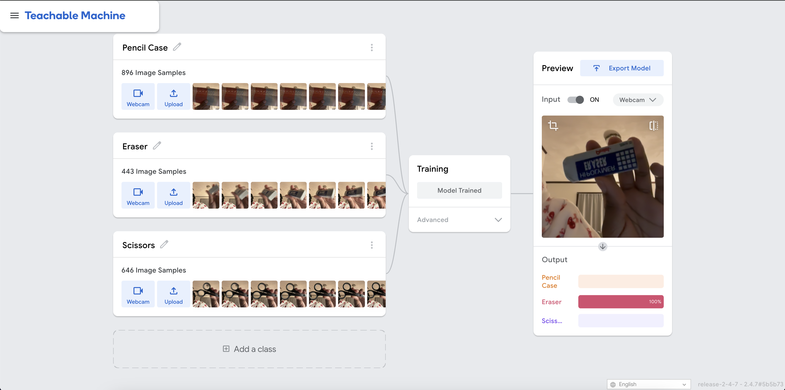

Machine Learning is a subset of AI and one of the leading techniques that enable computers to learn patterns from data and make decisions without being explicitly programmed to. Through examples and thorough analysis, machine learning can identify patterns, make predictions, and improve performance over time as they continue to process more data.
After learning about machine learning, this project gave us a hands-on opportunity to reflect on the many challenges that Buolamwini describes in her book, Unmaking AI. We learned that there were many decisions that go into making AI systems accurate and reliable. The process of creating and testing this algorithm provided valuable insights into the technical challenges and broader ethical issues surrounding AI.
Our objective for this project is to use machine learning to recognize and classify common classroom items such as pencil cases, scissors, and erasers. As we went through the motions of training a machine to differentiate between different objects, we faced challenges and were able to think critically about how our experience in this process related to the various topics discussed in Unmasking AI by Joy Buolamiwini.
Try Our ModelOriginally, we aimed to train this machine-learning model to recognize different writing utensils such as pens, pencils, and highlighters. This didn’t work out well because they were too small and thin, making it difficult for the model to identify them correctly through the camera. We pivoted by switching to larger and thicker items that were still in the same realm, which worked out better as they were more easily recognizable. To help the model learn, we took multiple pictures of these objects from different angles and distances for the machine to build a better understanding of the shape of these objects.
Objects such as the pencil case and eraser were often misidentified when positioned further away from the camera, likely due to having fewer images of these specific objects compared to the scissors. Additionally, the model’s performance was limited by the lack of variety in our dataset, as we only had one of each object and did not capture photos in different lighting conditions. For example, one of the failures we encountered involved a pink eraser with two distinct sides: one blank and the other with printed letters. When testing the AI with this eraser, it incorrectly labeled the blank side as a pencil case but correctly identified the side with letters as an eraser. This inconsistency highlighted the model’s reliance on specific visual features and its difficulty generalizing from limited data. Overall, the process revealed that the quantity and diversity of training data significantly impact the algorithm’s ability to generalize and accurately identify objects.
Machine learning is a subset of AI and one of the leading techniques that enable computers to learn patterns from data and make decisions without being explicitly programmed to. Through analysis and examples, machine learning algorithms can identify patterns, make predictions, and improve performance over time as they process more data. After learning about machine learning, this project gave us an opportunity to work hands-on at the many challenges Buolamwini describes in her book, Unmasking AI: my mission to protect what is human in a world of machines. Our project aimed at developing an object recognition algorithm using Teachable Machines to classify common school supplies such as pencil cases, scissors, and erasers. While we decided on classifying something more straightforward such as school supplies, we learned that there were still many decisions that go into making AI systems accurate and reliable. The process of creating and testing this algorithm provided valuable insights into both the technical challenges and broader ethical issues surrounding artificial intelligence, which are topics that are covered and explored through various real-life scenarios in Unmasking AI.
One of the biggest takeaways from our project was realizing just how much the quality and variety of training data affect how well an AI system works. Since our dataset only included one example of each object, such as a single pencil case or a pair of scissors, the algorithm struggled to recognize anything even slightly different. We learned that it was quite particular with the environmental factors at play. Due to this, if we tested it with a pencil case of a different color or scissors with a different design, there’s a possibility that it would fail due to its lack of material variation. Joy Buolamwini talks about this in Unmasking AI, explaining how AI systems that are trained on narrow or unrepresentative data often perform poorly when applied in real-world situations, especially when dealing with diverse human populations. Even though our project was focused on objects, the same pattern showed up—if the training data isn’t diverse, the system’s abilities are going to be limited, no matter what it’s trying to identify. This correlation was one that nearly went unnoticed until it came to regrouping and reflecting on our thoughts and experiences and how they related to the material we have been learning about in this class.
One of the biggest takeaways from our project was realizing just how much the quality and variety of training data affect how well an AI system works. This process revealed that the quantity and diversity of training data significantly impact the algorithm’s ability to generalize and accurately identify objects. We learned that the machine was very particular with the environmental factors at play, so due to our dataset and the conditions of the lighting it’s probable that if we tested variations of the items then there’s a possibility that it wouldn’t recognize it at all. Meaning that a pencil case of a different color or a pair of scissors with a different shape and design might not be properly categorized.
Joy Buolamwini explains how AI systems that are trained on narrow or unrepresentative data often perform poorly when applied in real-world situations, especially when dealing with diverse human populations. Even though our project was focused on objects, the same pattern showed up—if the training data isn’t diverse, the system’s abilities are going to be limited, no matter what it’s trying to identify. Our decision to make changes throughout the process of this model underscores a larger point: AI systems are only as robust as the data and design choices made by their developers. By reflecting on these, we hope to carry forward a more thoughtful and ethical approach to AI development.
Our project prompted us to think about how these technical and ethical challenges scale up in real-world applications. While our algorithm’s limitations primarily affected its ability to classify school supplies, there are similar biases in larger systems that can have much more serious consequences. Buolamwini’s work highlights numerous cases where biased AI systems have perpetuated discrimination, from facial recognition tools that misidentify, or fail to identify, people of color to hiring algorithms that disadvantage women. For us, these examples emphasized the importance of addressing bias early in the development process, even in a seemingly simple project like ours.
As we worked through the changes in this process, switching our focus to different items, and making decisions that impacted the performance of our model–it made us recognize the importance of human decision-making in shaping an algorithm’s dataset and outcomes. Our image variety, positioning, and lighting setup were all factors that affected the accuracy of our model. Through these processes, we learned that the more photos under different conditions we provided for each object, the more accurate the machine was going to be.
Now, with a deeper understanding of the technical challenges involved in this project and with building an AI system, we are able to move on with the responsibilities that come with it and take responsibility for our work. This small-scale representation of datasets in machine learning and our exposure to class materials have allowed us to take a step back and evaluate all of the cogs that tick to work these systems into place. Fairness and bias are essential considerations when creating algorithms for computers as they’re meant to pick up on patterns and make predictions.